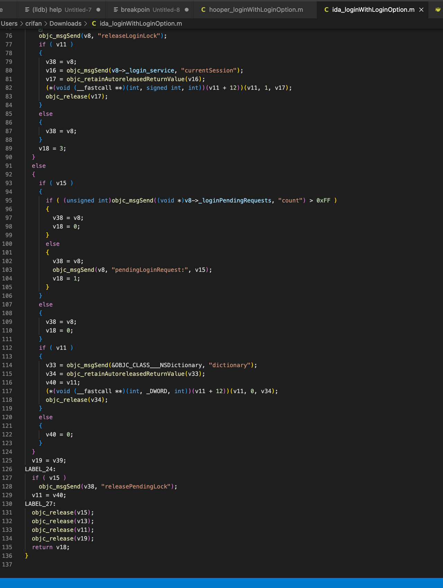

Hopper vs IDA
- Hopper vs IDA
- 概述
IDA算95分，Hopper算70分- IDA比Hopper强大很多
- 详解
- 总体对比
- 功能对比
- IDA：更强大
- 伪代码：逻辑更清晰
- Hopper：功能简洁，基本够用
- 伪代码：代码逻辑不够清晰
- IDA：更强大
- IDA和Hopper类比
- Hopper：小工具箱
- IDA：各种专业工具的工作室
- Hopper：小工具箱
- 功能对比
- 分项对比
- 平台支持
- Hopper：更倾向于
Mac - IDA：支持多平台：
Windows、Linux、Mac
- Hopper：更倾向于
- 功能支持
- 总体上还是IDA更强大，Hopper相对较弱
- 不过据说部分细节方面，有些Hopper支持更好？
- 比如
- 中文字符搜索
- IDA 7.0+：不支持
- Hopper：支持
- 中文字符搜索
- 比如
- 价格
- 正版IDA比Hopper贵很多很多
- IDA Pro：1000+美元
- Hopper：~100美元
- 正版IDA比Hopper贵很多很多
- 平台支持
- 总体对比
- 概述


Hopper vs IDA：反编译代码对比
某同一段代码的反汇编效果对比：
- IDA

- 
- Hopper


再用BeyondCompare详细对比：

结论：
明显能发现，反编译后的伪代码的效果：
IDA更好，Hooper不够好
再具体的说说细节：
- Hopper的ObjC函数调用的写法做了优化，比IDA更易读
- IDA
v22 = objc_msgSend(v15, "getApiName"); v23 = objc_retainAutoreleasedReturnValue(v22); - Hopper
r8 = [[r10 getApiName] retain];
- IDA
但是Hopper的核心代码调用逻辑，没有IDA清楚
- IDA
int __cdecl -[LoginAdapter loginWithLoginOption:isForce:extraInfo:completionHandler:cancelationHandler:request:](struct LoginAdapter *self, SEL a2, int a3, char a4, id a5, id a6, id a7, id a8) ... if ( !v8->_login_service ) { v18 = 0; v19 = v39; goto LABEL_27; } ... LABEL_27: objc_release(v15); objc_release(v13); objc_release(v11); objc_release(v19); return v18; } Hopper
int -[LoginAdapter loginWithLoginOption:isForce:extraInfo:completionHandler:cancelationHandler:request:](void * self, void * _cmd, int arg2, char arg3, void * arg4, void * arg5, void * arg6, void * arg7) { ... loc_2aaf046: if (r10 != 0x0) { [stack[2052] releasePendingLock]; } r6 = stack[2054]; goto loc_2aaf060; loc_2aaf060: [r10 release]; [r11 release]; [r6 release]; [r4 release]; r0 = r5; return r0; ... loc_2aaee0a: r5 = 0x0; r4 = stack[2053]; goto loc_2aaf060; }
- IDA
后记：
自己在给YouTube恢复符号表之后，发现：
IDA的函数调用，也已经自动为iOS的ObjC做了优化，比如：
- IDA
void __cdecl -[MLHAMQueuePlayer setStatus:](MLHAMQueuePlayer *self, SEL a2, signed __int64 a3)
{
signed __int64 v3; // x19
MLHAMQueuePlayer *v4; // x21
signed __int64 v5; // x20
__int64 v6; // x0
if ( self->_player )
{
v3 = a3;
v4 = self;
v5 = self->_playerStatus;
self->_playerStatus = a3;
if ( a3 != 7 )
{
if ( v5 != 1 || (unsigned __int64)(a3 - 2) >= 3 )
{
if ( a3 == 8 && self->_playerError )
{
-[MLHAMQueuePlayer failWithError:](self, "failWithError:");
LABEL_11:
-[HAMEventCenter asyncBroadcastPlayerStatusChangeFromStatus:toStatus:](
v4->_hamEventCenter,
"asyncBroadcastPlayerStatusChangeFromStatus:toStatus:",
v5,
v3);
return;
}
}
else
{
-[MLHAMQueuePlayer setState:](self, "setState:", 2LL);
}
v6 = sub_F91AA8(v3);
-[MLHAMQueuePlayer setState:](v4, "setState:", v6);
-[MLHAMQueuePlayer updateForegroundAudioOnlyPlaybackState](v4, "updateForegroundAudioOnlyPlaybackState");
goto LABEL_11;
}
}
}
其中的：
-[MLHAMQueuePlayer failWithError:](self, "failWithError:”);
-[HAMEventCenter asyncBroadcastPlayerStatusChangeFromStatus:toStatus:](
v4->_hamEventCenter,
"asyncBroadcastPlayerStatusChangeFromStatus:toStatus:",
v5,
v3);
等代码中ObjC函数调用的写法，已经优化为我们希望的效果了：
[ObjcClass function](para1, para2)
即：
IDA中其实也已支持ObjC函数调用的优化的写法了。